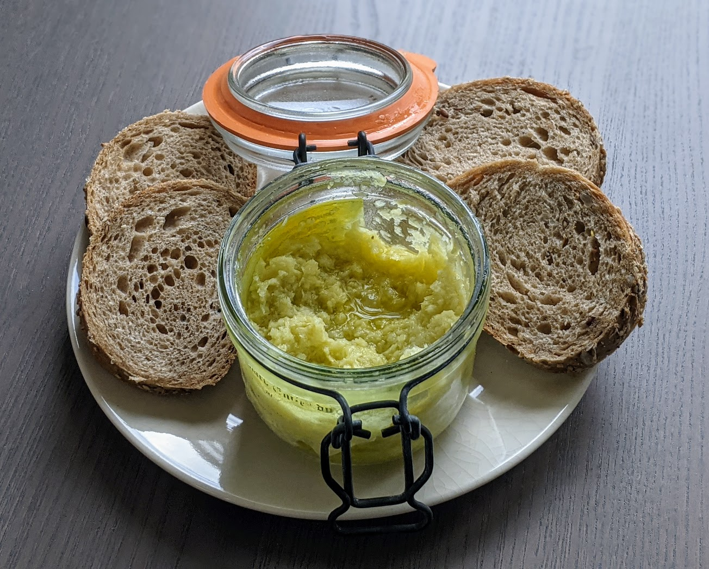

..@..♦.D.

|
Présentation 
|
Blog
|
Recettes
|

Pour un petit pot de crème :
Remarque : c'est plus joli et crémeux si on ne se sert que des membranes entre les gousses d'ail ; on peut aussi se servir des petites tranches de tiges pour agrémenter des plats (un peu comme on utiliserait de l'oignon frais). Dans ce cas, mieux vaut prévoir au moins trois têtes d'ail nouveau pour avoir une quantité raisonnable de crème d'ail.